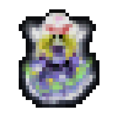

Hallo, mijn naam is Teo, uit Nederland
Ik ben 3e-jaars student van Mediacollege Amsterdam en volg de opleiding Software Development.
Ik ben op zoek naar een stageplek waar ik met een niet te grote team gericht aan technische aspecten van spellen kan werken.
Daar wil ik de vrijheid hebben om te kiezen, of een stem te hebben in- waar ik aan werk, gebaseerd op waar ik het best in ben.
Mijn interesse ligt voornamelijk bij game-dev, maar ik doe ook aan video editing en pixel-art too, en zelfs wat digitale muziek.
Ik vind het gewoon leuk om dingen te creëren.
En ik ben vooral geïnteresseerd in het maken van grote multiplayer games, maar ik maak ook gewoon kleine projecten die me leuk maken.
Het hoeven niet eens games te zijn, gewoon verschillende tools en dat soort dingen.
Nog voordat ik aan mijn opleiding begon, was ik een hobbyistische game-dev, die de mogelijkheden aan het verkennen was.
Zo ben ik aan programmeren begonnen:
Preliminaire interesse //- games die me het concept van programmeren bijbrachten
Het eerste spel dat ik ooit heb gespeeld moet Little Big Planet zijn geweest... op de PS3, toen ik ongeveer 4 jaar oud was.
Ik weet zeker dat als die game geen SANDBOX game was geweest, ik veel minder kans had gehad om te zijn waar ik nu ben.
Die platformer game is een bastion van creativiteit, je kunt er een heleboel coole dingen mee maken! Het heeft een"circuit" systeem- je kunt verschillende
componenten zoals logische poorten of reken-operatoren of sensoren aan dingen toevoegen, en dan dingen met elkaar verbinden om mechanica in je levels te creëren. Dit is het belangrijkste
deel van de sandbox ervaring. En je zou het technisch gezien programmeren kunnen noemen, in de bredere definitie van het woord. Het is net zoals visual scripting.
De eerstvolgende impactvolle game dat ik tegenkwam heet Manyland. Het is een tile-based 2D sandbox browser game waarin alles bestaat uit pixel-art die door de spelers is getekend.
Je kunt een wereld maken en die vullen met dingen van anderen of dingen die je zelf hebt gemaakt. Maar het belangrijkste is dat de game ook zijn eigen programmeertaal heeft die jou toestaat
om interactieve objecten, game mechanics, en systemen te creëren. Je kunt dus een wereld creëren waarin je een pingpongspel hebt, of een werkend schaakbord, enzovoort, en andere spelers met je laten spelen.
Ik heb veel tijd in deze game gestoken, gewoon dingen aan het coderen met de game zijn eigen taal. Maar ik heb ook veel tijd besteed aan pixel-art! //(wat later zijn vruchten afwierp)
Mijn eerste echte programmeer ervaring
...Maar dit veranderde toen ik in 2019 een open-source spel vond genaamd Barotrauma.
Ik leerde C# door die codebase te kijken en willekeurige dingen rond te veranderen totdat ik uitvogelde wat ze deden en hoe ze werkten.
Gewoonlijk is de game een co-op waar de spelers als mensen op een onderzeeër spelen. Ze gaan op verkenning uit en komen af en toe wat AI monsters tegen in het water
buiten en bevechten hun.
Wat ik in plaats daarvan heb gedaan is dat de onderzeeër beweegloos is en dus er geen verkenning is, en 50% van de spelers willekeurig worden gekozen om te spelen als een monster in plaats van een mens.
Het is dus een volledig op PvP gerichte gamemode met spelers als mensen tegen andere spelers als monsters.
Mijn Projecten
Plex
Een multiplayer PvP spel net zoals stick-fight
TeaMajesty
Een simpele puzzel spel
Character Customisation
Een website gebruikend , , en Socket.io
Touhou Game

Een bullet-hell spel. Gemaakt met de OpenTK library, geen engine.